How to Test Visual Nutrition
Prerequisites
- An Apple iPhone with iOS 14 or later, with camera and microphone access.
- An Apple Account to sign in to the TestFlight app.
- Read and agree to the terms and conditions.
How to Download the App
- Download the TestFlight app from the Apple App Store.
- Sign in with your Apple Account.
- Click this link to join the Visual Nutrition TestFlight group: https://testflight.apple.com/join/SXcQ8YSz
- Download Visual Nutrition through the TestFlight app.
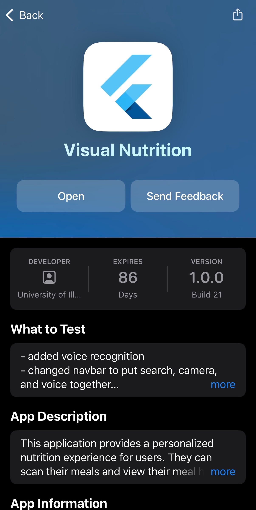
How to Use the App
- Sign up with an email and password.
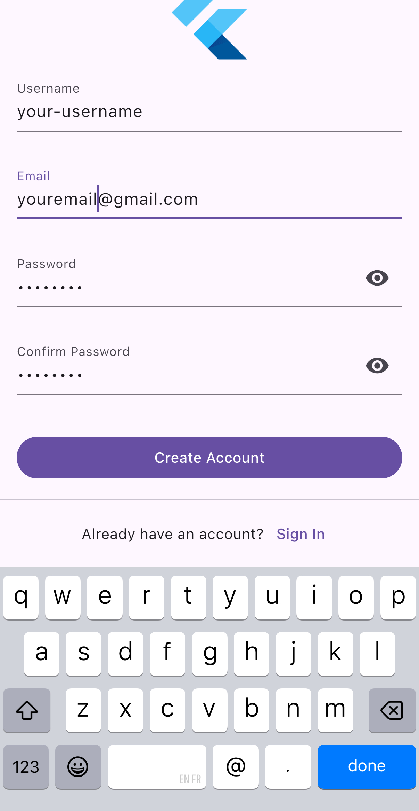
- Fill in personal information to calculate your dietary needs.
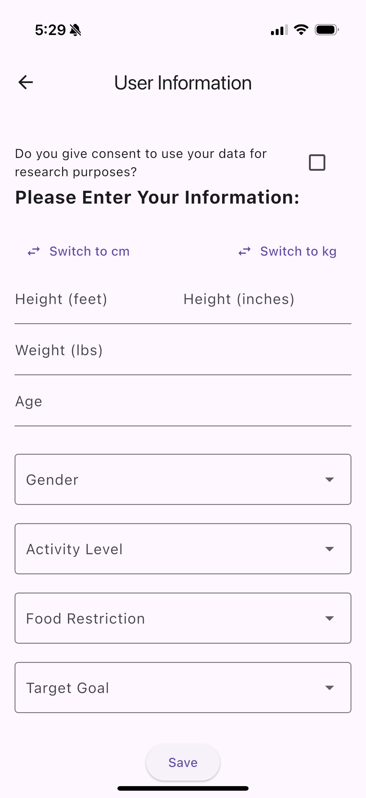
- Add foods via photo, voice,or search.
 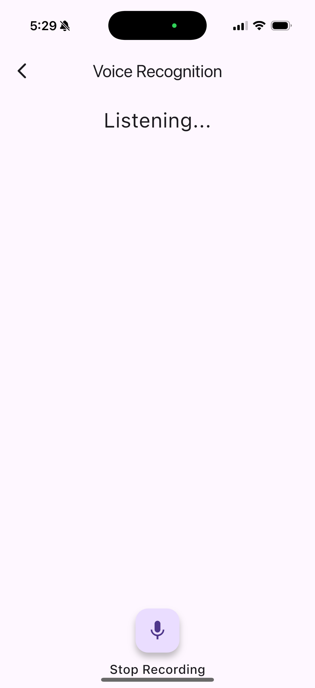
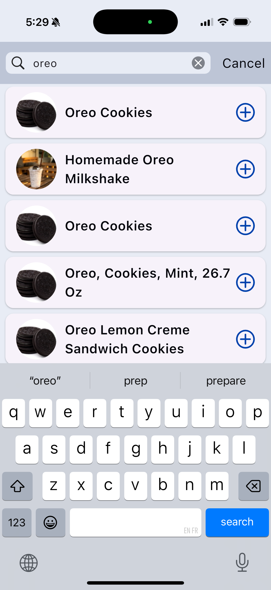
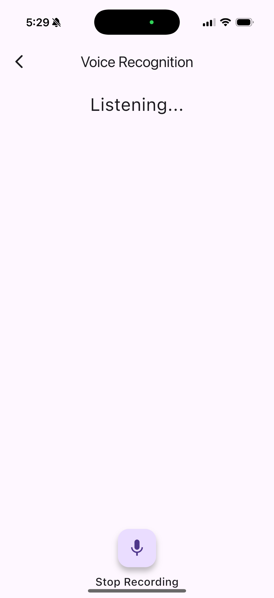
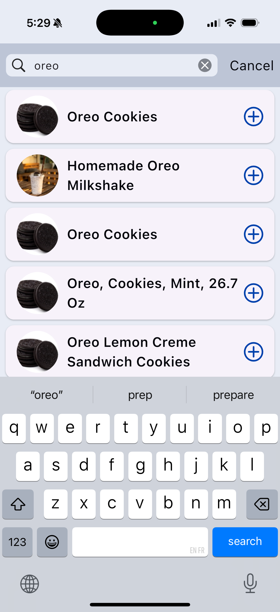
- View your progress.
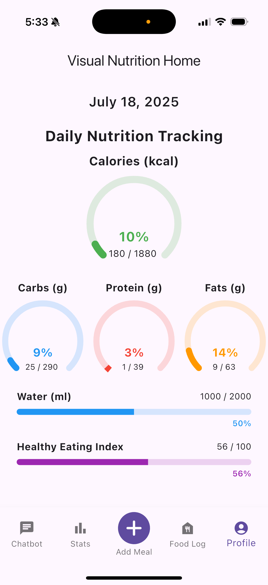
- Ask questions to the AI Nutrition Advisor.
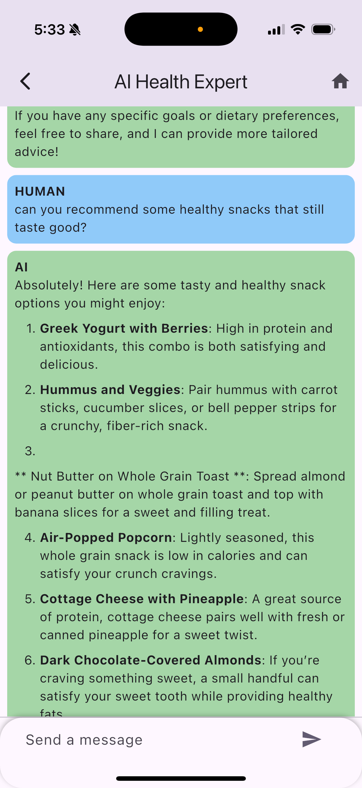
- View your profile.
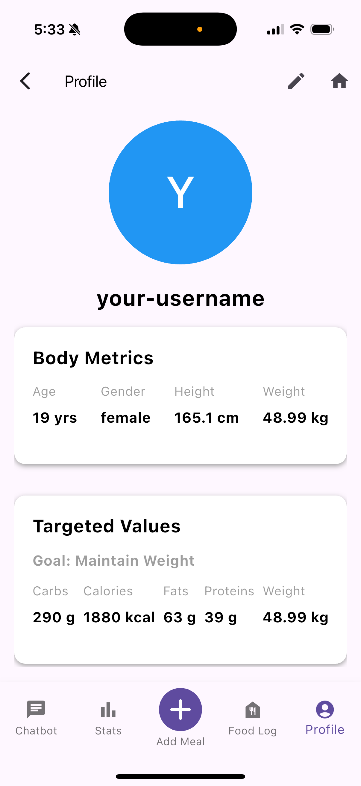
How to Report Feedback
- Take a screenshot by pressing the buttons as displayed, according to your phone type.
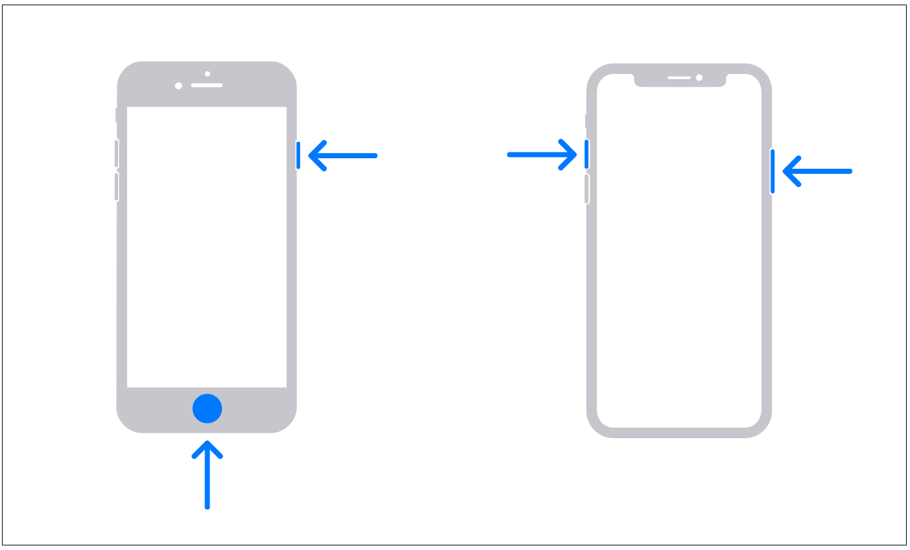
- After you've taken a screenshot, press Done > Share Beta Feedback.
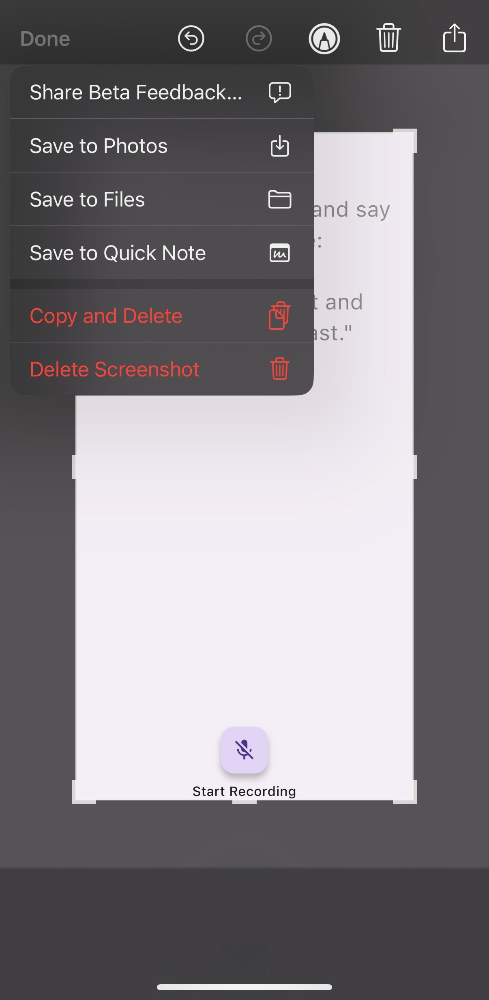
- Submit your feedback. If the screenshot displays a bug, please describe the bug and the steps to reproduce it. Otherwise, please describe your experience or suggestions.
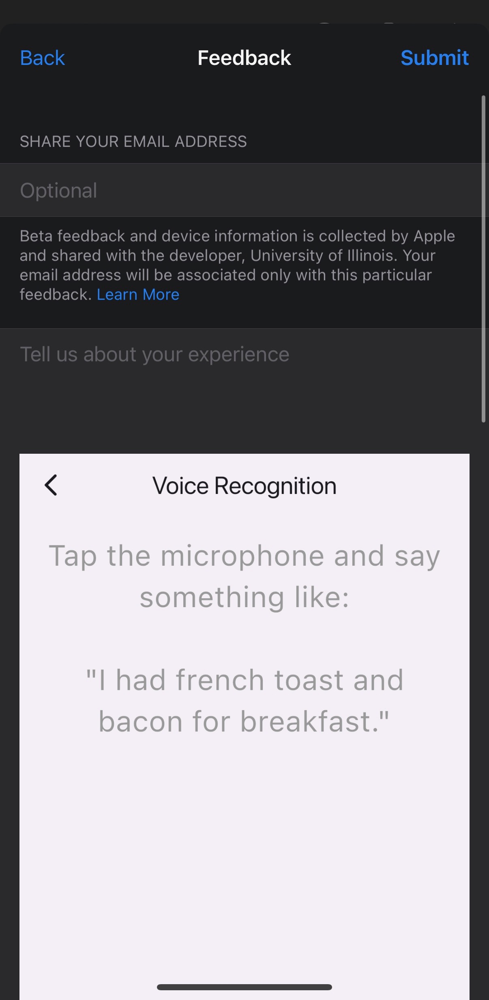